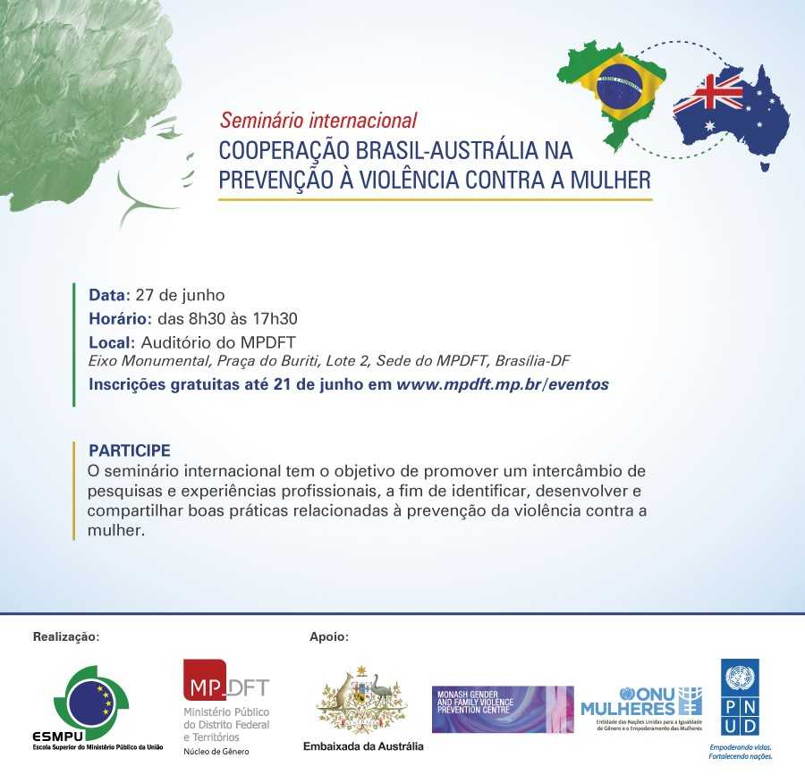
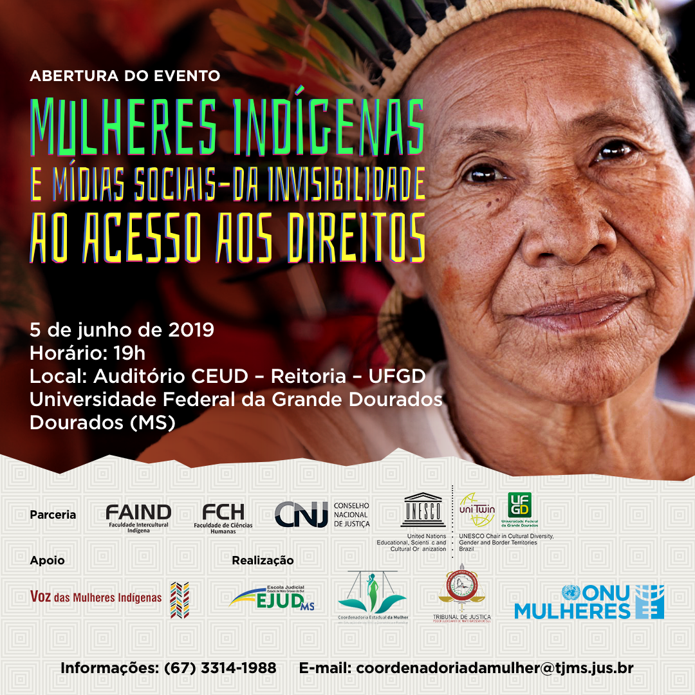

27.06.2019 - [Evento] Seminário Internacional Cooperação Brasil-Austrália na Prevenção à Violência contra a Mulher
Descrição - O seminário internacional tem o objetivo de promover um intercâmbio de pesquisas e experiências profissionais, a fim de identificar, desenvolver e compartilhar boas práticas relacionadas à prevenção da violência contra a mulher. O Evento é uma realização da Escola Superior do Ministério Público da União (ESMPU) e do MPDFT. Apoiam o Seminário: Embaixada da Austrália, Monash Gender and Family Violence Prevention Centre e ONU Mulheres (Entidade das nações Unidas para a igualdade de Gênero e o Empoderamento das Mulheres). Data: 27 de junho de 2019 Horário: das 8h30 às 17h30 Local: Auditório do MPDFT – Brasília/DF Inscrições: faça aqui até 21/6 (limitado a 300 pessoas) Informações: programação
05.06.2019 - [Evento] - Abertura do evento: “Mulheres indígenas e mídias sociais – da invisibilidade ao acesso aos direitos”
Descrição - Visibilidade e direitos das mulheres indígenas são temas centrais de programação que se inicia, nesta quarta-feira (5/6), em Dourados, por iniciativa do Tribunal de Justiça do Mato Grosso do Sul (TJ-MS) e da ONU Mulheres em parceria com o Conselho Nacional de Justiça (CNJ), Universidade Federal da Grande Dourados (UFGD), Cátedra Unesco e apoio do grupo Voz das Mulheres Indígenas. Três atividades articulam os temas: debate “Mulheres Indígenas e mídias – da invisibilidade ao acesso a direitos”, em 5/6; exibição e debate do mini-documentário Mulheres Indígenas: vozes por direitos e justiça, em 6/6; e 1ª edição do “Curso Mulheres Indígenas e Novas Mídias”, em 6/6 e 7/6. Data: 5 de junho de 2019 Horário: a partir das 19h Local: Dourados/MS Email: coordenadoriadamulher@tjms.jus.br Informações: (67) 3314 1988